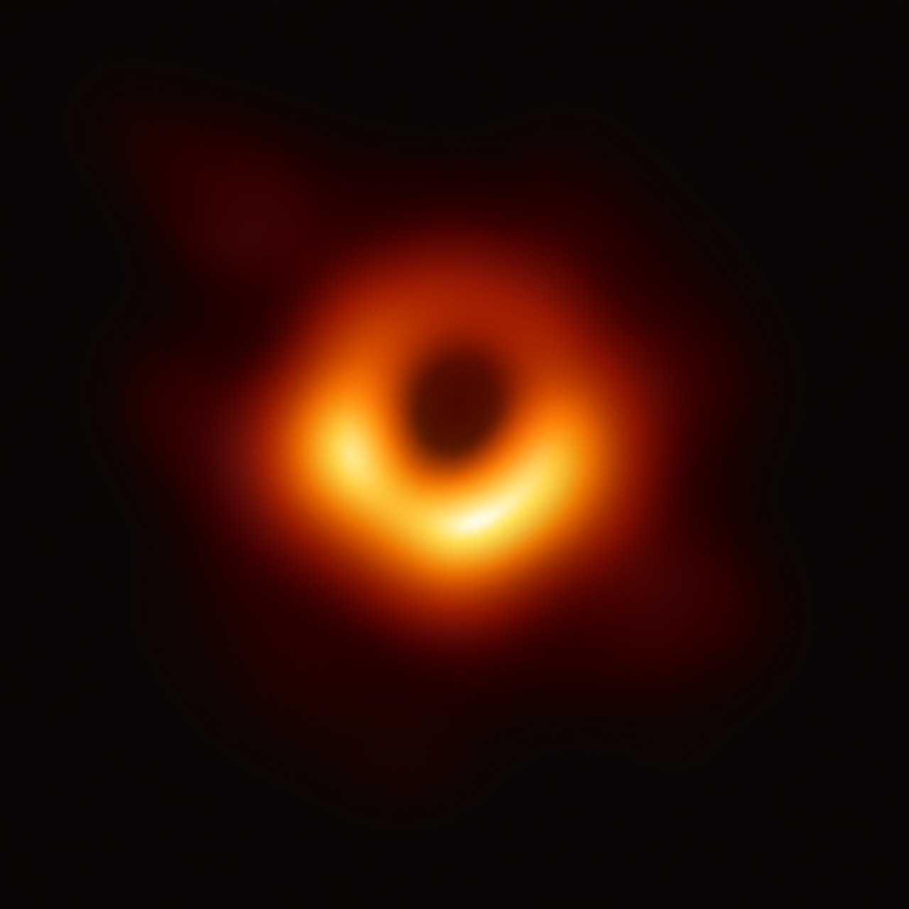
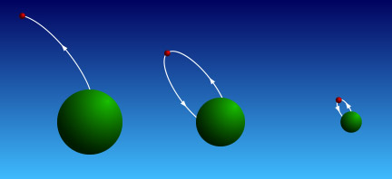
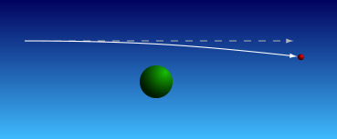
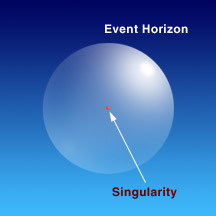
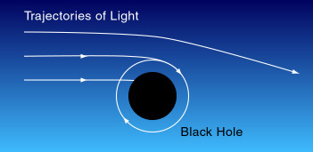
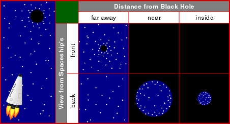
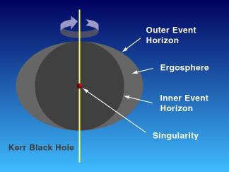
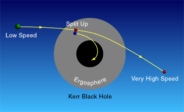
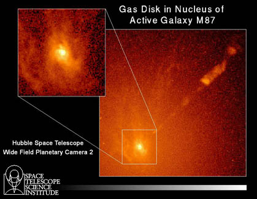
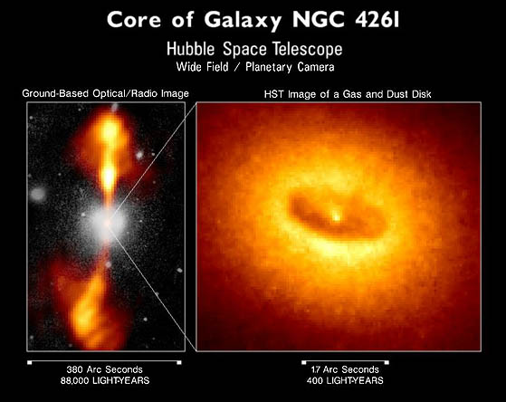

 |
| Courtesy EHT. |

If we throw a small rock up to the sky, it will fall back to the ground. If we throw it slightly faster, it will go up higher. However, if we throw it faster than the escape velocity, the rock will go out to the space and never return.Because of gravitational attraction, the escape velocity at the surface of a star, say, will be higher if the star is smaller in size or heavier. On the other hand, Einstein discovered that the maximum velocity of any object is the speed of light. Therefore, if the escape velocity on the surface of an object is greater than the speed of light, then nothing, including light, can escape from it. We will then have a black hole.
To understand a black hole, we need the theory of general relativity.
The central idea of general relativity is
that the existence of mass will affect the
spacetime around it. However, we must have a huge mass to see the effect.
In Newtonian mechanics, we say the Moon is attracted by the Earth, so
it orbits around the Earth. In the theory of general relativity, we will
say the Earth affects the spacetime around it, thus the Moon is no
longer moving in a straight line, instead it goes around the Earth.
Just like a marble will not move in a straight line on an uneven table.
For the same reason, light is not moving in a straight line near some
massive object.

Black hole is where the gravitational force is so strong that it bends light to the greatest extent: light cannot escape. The boundary surrounding the region where light, and hence everything else, cannot escape is called the event horizon. The name comes from the fact that since nothing can go out of this boundary, an outsider cannot observe any of the events happening inside. For Schwarzschild black hole, namely a non-rotating and electrically neutral one, the radius of the event horizon is called the Schwarzschild radius, RS. It only depends on the mass of the black hole:

We call the center of a black hole a singularity. Naively, it has zero radius and infinite density. This is not correct. The accurate statement is that we do not know the physical laws that govern the singularity and we have no idea what happens in the tiny region near the center.
Outside the event horizon, there is a sphere which light can orbit around the black hole. It is called a photon sphere. Here, light travels around the black hole is bended in a closed loop. The effect of a black hole will decrease if the light travels further away from it. In fact, if our Sun suddenly became a black hole, the orbits of all the planets would not change at all.

So what will happen if someone is free falling into a black hole? It will be very different from our everyday life experience. First, if you observe that unfortunate man at a distance, you will see that man falling faster and faster at the beginning, like any falling object from heights. When he is near the black hole, the falling speed will decrease. The falling motion will slow down when he is near to the event horizon. The man will also seem to be in slow motion and eventually come to stationary. As seen from you, he will never reach the event horizon.

As from him, things are completely different. Let us assume that he can survive the journey. If the man observes carefully, he will see that the black hole will become larger and larger when he comes closer. The black hole will almost engulf him after he enters the event horizon. He can see the universe outside only from a small window on his back. Apart from this, he feels nothing, no shock or jolt as he enters the event horizon. In a short while, he will hit the singularity.

What we have just discussed are non-rotating black holes. A rotating black hole is also called a Kerr black hole. There are two event horizons, the outer and the inner. The region of space in-between the two horizons is the ergosphere. Anything inside the ergosphere will be dragged by the black hole and rotate with it but it can still escape. However, anything inside the inner event horizon can never escape.
We can extract rotational energy from a rotating black hole. If we send
something to the inside of the ergosphere, and split it up into two parts,
one goes in the black hole while the other comes out. If we correctly
arrange the splitting, the part coming
out can be made to have a much higher speed, hence
higher energy. It is possible that some advanced civilization gets
the energy they need through this method.

Kepler's laws (See Chapter 4.) still hold approximately outside the event horizon. By Kepler's laws, measuring the orbiting speed of the gas, say, around an object will tell us the lower mass limit of the object. (We can measure the orbiting speed by Doppler's effect, see Chapter 5.) If an object has a lower mass limit over 3 solar masses, occupying a small space (not a cluster of stars) and not emitting much light, then we can say that it is highly likely to be a black hole.
Usually, a real black hole will have accretion disk around it and have jets gushing out at two poles. When material falls into the black hole, high intensity X-rays will be emitted. The presence of X-rays also indicates that an object may be a black hole (or possibly neutron star).
Cygnus X-1 is the oldest known case of a black hole candidate. It is a dark companion of a type O star. Its lower mass limit is 7 solar masses and it emits X-rays. Everything indicates it is possibly a black hole.
 |
| Courtesy STScI. |
NGC4261 is another example. Not counting the accretion disk, there exists 1.2x109 solar masses in a volume about the size of our solar system. Nothing other than a supermassive black hole can explain this.
 |
| Courtesy STScI. |
Hawking Radiation: You are told that once something enters the event horizon, it can never get out. So, is it that nothing can come out from a black hole? Well, Stephen Hawking gave us a surprise answer. He discovered that theoretically, black holes will radiate with a black body spectrum. This is called the Hawking radiation. Hence we can talk about the temperature of a black hole. The temperature is inversely proportional to the mass of the black hole and is extremely low for any stellar black holes. The Hawking temperature of a solar mass black hole is about 6x10-8K. We might be able to detect the Hawking radiation of a mini black hole, provided we can find one.
Mini Black Holes: The black hole formation discussed so far can only produce black holes with mass greater than about 3 solar masses. We believe that no mechanism exists to produce mini black holes after the first second of the beginning of the universe. Are there any mini black holes in the universe now? Theoretically, it is possible.
The End of a Black Hole: If black hole can radiate, it will lose mass. What will happen if it loses all its mass? This is a research question with no answer for the time being.
Worm Holes: In science fiction, we often read that a worm hole will connect two places in the universe. The hero in the fiction will go through the worm hole and travel to a distant place in a short time. To our best knowledge, worm hole exists theoretically. However, there are some big drawbacks as a "tunnel." The two ends will appear to be black holes to the outsiders. After you travel through the worm hole, you can see what happens outside, but you cannot get out of the black hole at the other end before you are crushed by the singularity.